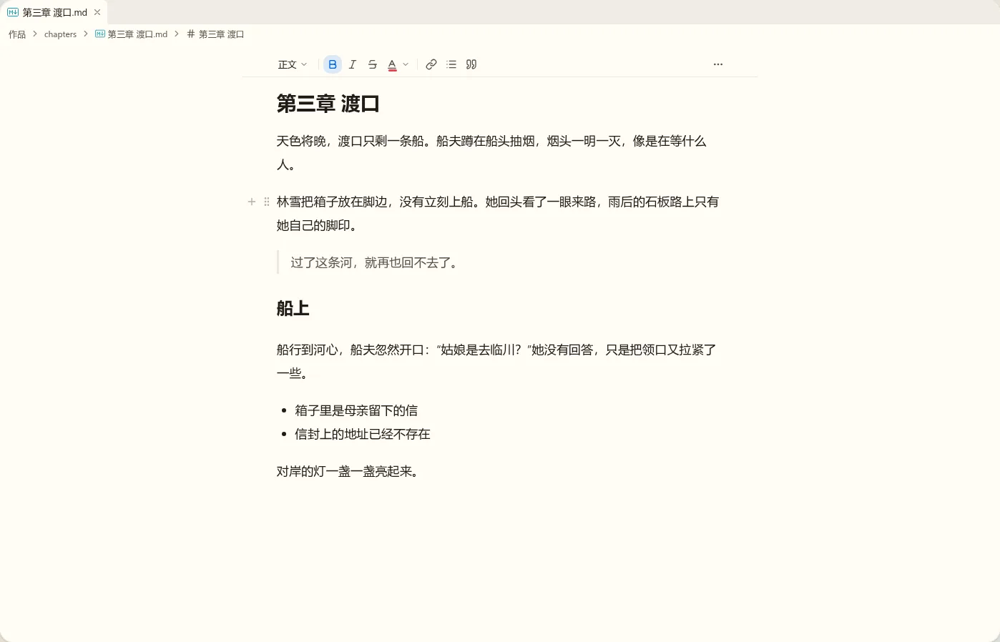
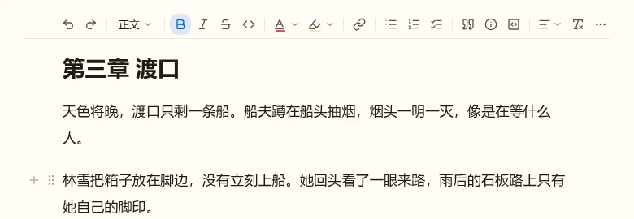
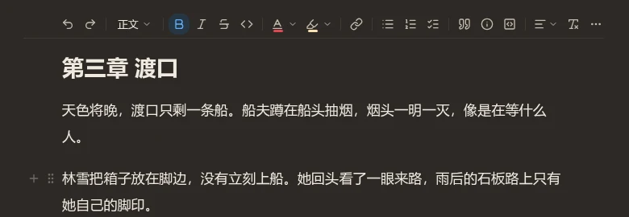
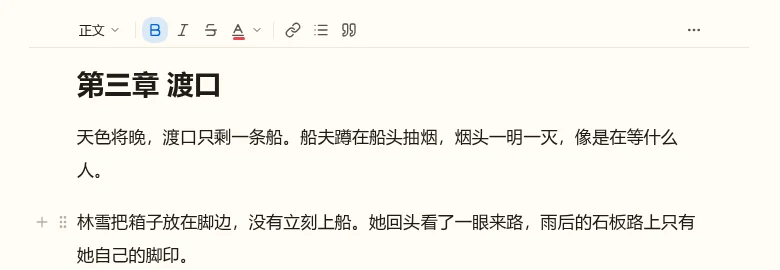
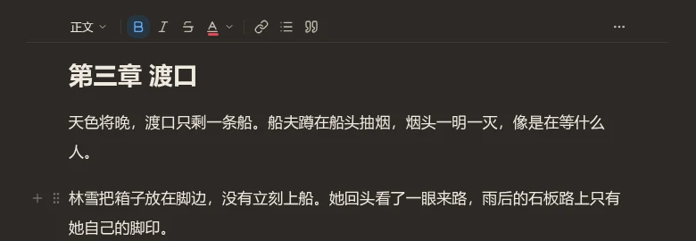
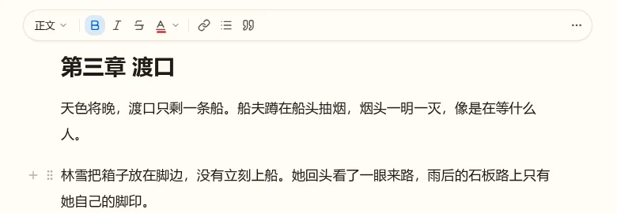
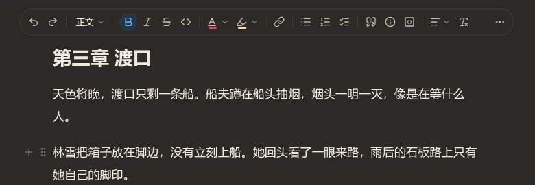
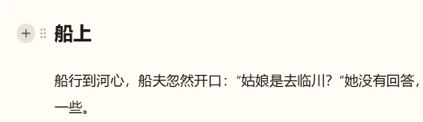
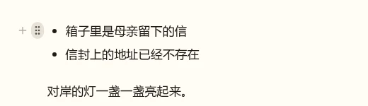

编辑命令与菜单评审板
w00025 t08：Markdown 编辑器的固定工具栏、选区浮动菜单、斜杠命令、块按钮与块菜单、正文右键菜单。草稿叠在 Lab 里真实的编辑器区上（真实的标签栏、面包屑与正文），工具栏与块按钮是一次性的草稿，不是产品代码；悬停、弹出这类交互不在静态稿里。
已定（2026-10-20）：只有固定工具栏常驻，放在标签栏与面包屑下方、与 720px 版心同宽居中，可在“视图”菜单里关掉，默认打开；其余菜单按需出现。块左侧照 Notion 放两个按钮：+ 与拖动手柄。所有编辑动作登记成工作台命令，插件可以往每种菜单里加菜单项。行内 AI 接口拆到 t12，批注界面在 t13。
图里正文的粗体没有显示成粗体，是现有的一个缺陷（全局样式重置把粗体、斜体、删除线清掉了，另行修复），与本轮无关。工具栏上的“粗体”按下，表示光标在粗体里。

工具栏放哪些按钮 待定
两套都在最右放“⋯”，没放上来的动作都在里面；版心变窄（例如拆分后）时，按钮从右往左收进“⋯”。按钮都是命令，以后可以让用户或插件调整。
完整（19 个）
撤销、重做 ｜ 块类型 ｜ 粗体、斜体、删除线、行内代码 ｜ 文字颜色、高亮 ｜ 链接 ｜ 无序、有序、任务列表 ｜ 引用、提示块、代码块 ｜ 对齐、清除格式 ｜ ⋯（上标、下标、分割线、注音、双语）


精简（9 个）
块类型 ｜ 粗体、斜体、删除线、文字颜色 ｜ 链接、无序列表、引用 ｜ ⋯（撤销、重做、行内代码、高亮、上下标、有序与任务列表、提示块、代码块、分割线、对齐、清除格式、注音、双语）


/ 和 + 里都还有，撤销重做有 Ctrl+Z。工具栏的样子 待定
平铺：没有底色，按钮从正文左边缘起排，下面一条分隔线，正文在它下面滚动。卡片：圆角卡片，有边框和浅阴影，像浮在纸面上。
平铺
卡片


块左侧的两个按钮这样画 待定
鼠标停在一块上时，左侧留白里出现 + 与拖动手柄（灰色，与正文第一行垂直居中）；停在哪个按钮上，那个按钮加一层底色。列表按每一项算，按钮在圆点左侧，与其它块同一列。点 + 做什么在会话里另问。

+ 上
选区浮动菜单、斜杠菜单、块菜单（点手柄）、正文右键菜单各放什么、什么样子；都定了再写实施计划。